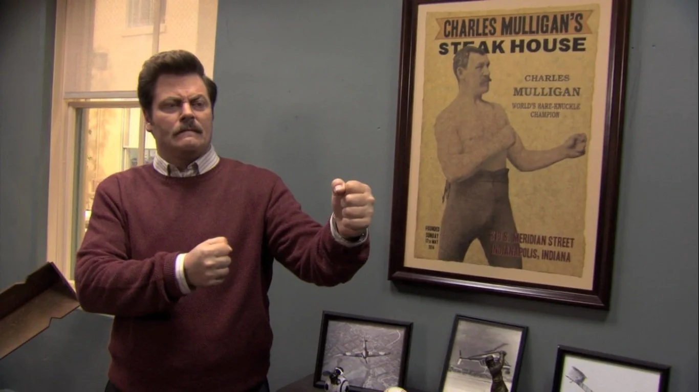
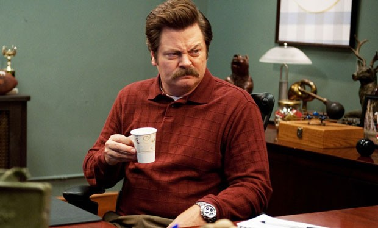

Who is Ron Swanson?
Ron Swanson is a fictional character in the television show, Parks and Recreation.

Some facts about Ron -
- His full name is Ronald Ulysses Swanson
- He's known as the director of the fictional Pawnee, Indiana, Parks and Recreation Department
- He despises interacting with the public
- Although claiming to not be interested in the lives of those around him, he is known to care for his colleagues
- Under the alias Duke Silver, he secretly performs as a saxophonist

Ron is know for some great quotes so here are a few gems -
- “There’s only one thing I hate more than lying: skim milk. Which is water that’s lying about being milk.”
- “Dear frozen yogurt, you are the celery of desserts. Be ice cream, or be nothing.”
- “Fishing relaxes me. It’s like yoga, except I still get to kill something.”
- “I’d wish you the best of luck but I believe luck is a concept created by the weak to explain their failures.”
- “Any dog under 50 pounds is a cat, and cats are useless.”
Some more great quotes can be found here and full WikiPedia page about him here.
Here are some classic Parks & Rec episodes with Ron escapades -
"End of the World"
Season 4, Episode 6
Season 4, Episode 6
"The Fight"
Season 3, Episode 13
Season 3, Episode 13
"Leslie and Ben"
Season 5, Episode 14
Season 5, Episode 14
"Ron and Tammys"
Season 4, Episode 2
Season 4, Episode 2
"Halloween Surprise"
Season 5, Episode 5
Season 5, Episode 5
"Ron and Tammy II"
Season 3, Episode 4
Season 3, Episode 4
